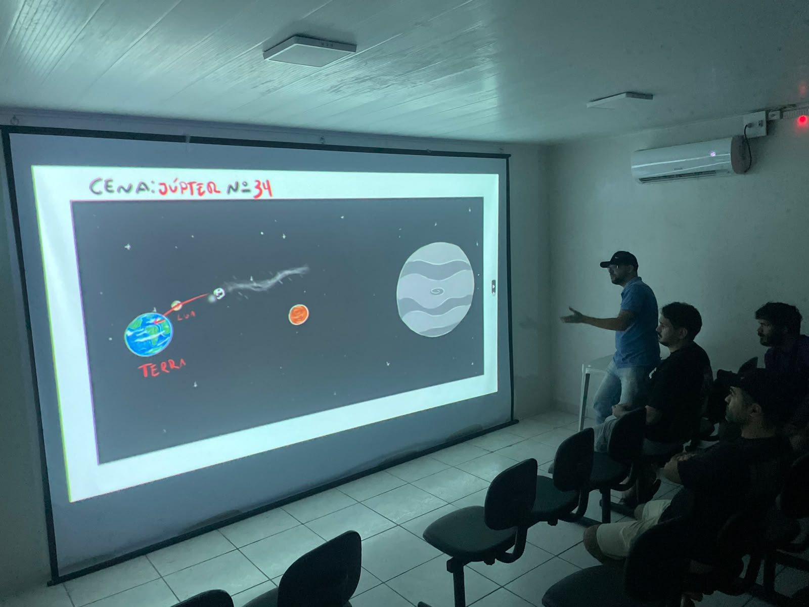
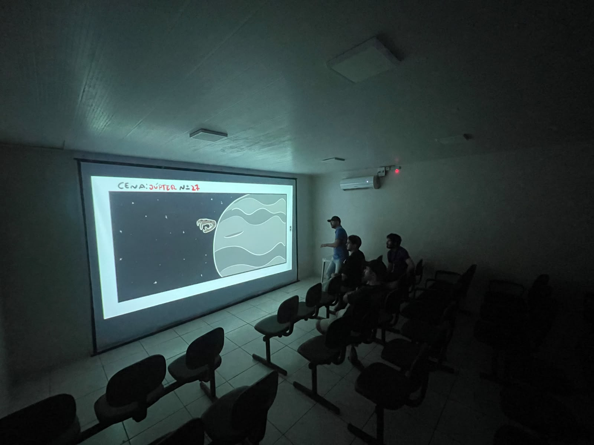
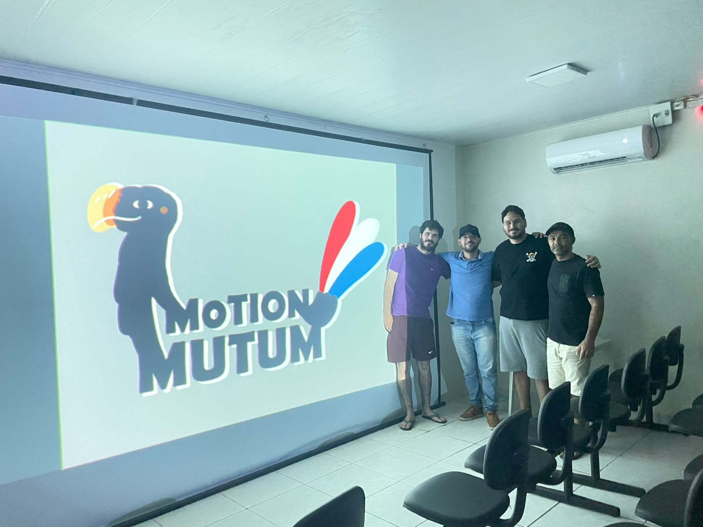

Fazemos jogos e curtas com alma brasileira.
A Motion Mutum é um estúdio independente que nasce em Alagoas, misturando arte digital, folclore e muito carinho por cada quadro.
Nossos jogos
Mundos em arte digital feitos à mão — um projeto de cada vez, feito para durar.
EVOLUA!
Um running/plataforma ambientado no Cretáceo. Você controla uma ave ancestral — mãe de todas as aves atuais — capaz de assumir a forma de outras aves conforme a semente que come, ao lado de um pequeno mamífero pré-histórico metamórfico. Atravesse biomas, escape de feras e obstáculos e volte ao ninho.
Uma visão lúdica e educativa da evolução por seleção natural — com criaturas inspiradas em espécies brasileiras, pré-históricas e atuais.
Quadro a quadro, direto de Alagoas
Por que um mutum?
O mutum-de-alagoas é uma das aves mais raras do mundo — símbolo de resistência e do nosso estado natal. Suas cores ecoam a bandeira de Alagoas: vermelho, branco e azul.
Somos um time pequeno e independente, fazendo jogos e animação com raiz regional e muito cuidado. Devagar, feito à mão, nosso.
Iniciativa com apoio da Prefeitura de Coruripe e da Secretaria Municipal de Cultura — que cede nosso espaço. Como contrapartida, realizamos palestras, workshops e o Cineclube da Biblioteca Municipal.





Quatro fundadores, um ninho
Arte, ciência, código e narrativa — a mistura por trás da Motion Mutum.

Game Artist e animador do EVOLUA! — arte, ilustração e animação do jogo. Bacharel em Análise de Sistemas; pintura, gravura e arte digital; coautor do curta em stop motion "Tupi Or Not Tupi" (2016).

Lead Artist, roteirista, game designer, animador e artista conceitual do EVOLUA!. Biólogo (herpetologia, ornitologia, paleontologia) e poeta; também esculpe para museus (Museu de História UFAL, Museu da Mata Atlântica).

Programador do EVOLUA!. Bacharel em Análise e Desenvolvimento de Sistemas; engenharia de software, modelagem 3D e web design.

Game Designer, Producer e QA Tester do EVOLUA! — também cuida de marketing e community management. Estudante de Licenciatura em História; coautor do curta "Tupi Or Not Tupi" (2016).
Publisher, festival ou fã? Diga olá.
Parcerias, imprensa ou vontade de fazer parte do bando — nos encontre por aí.